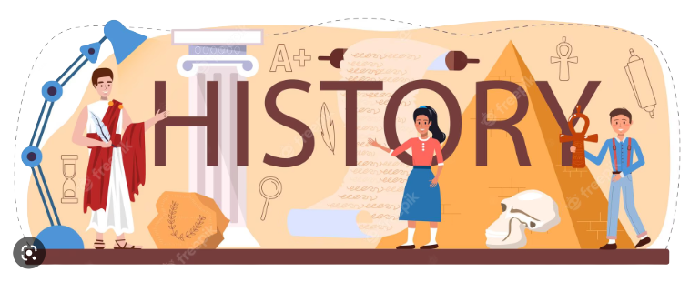

Lịch Sử
Ở cấp trung học phổ thông, Lịch sử là môn học lựa chọn theo nguyện vọng và định hướng nghề nghiệp của học sinh. Môn Lịch sử có sứ mệnh giúp học sinh hình thành và phát triển năng lực lịch sử, biểu hiện của năng lực khoa học, đồng thời góp phần vào việc xây dựng những phẩm chất chủ yếu và năng lực chung được xác định trong Chương trình tổng thể. Với đặc trưng của môn học, môn Lịch sử giữ vai trò chủ đạo trong việc giáo dục lòng yêu nước, tinh thần tự tôn dân tộc, truyền thống lịch sử và văn hoá dân tộc; củng cố các giá trị nhân văn, lòng khoan dung, nhân ái, tinh thần cộng đồng và hình thành những phẩm chất của công dân Việt Nam, công dân toàn cầu trong xu thế phát triển của thời đại.


